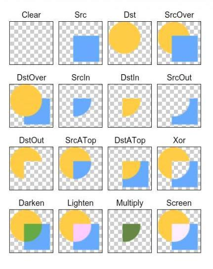

一.自定义控件的使用
需要把在bluetoothchat中传输过来的数据显示在memorytable上,可以new个thread在bluetoothchat中,然后在通过类似于textview一样的内置控件,根据findviewbyid来实例化memorytable,再设置这个memorytable其中的数据
二.thread
thread(new runnable(){
public void run()
})
三.super
“super”。它和"this"类似，但是也有不同的地方。
1。表示调用父类的构造函数。也是一个特殊语法，不是变量，没有什么类型。
2。可以在一个类的非static成员内部使用。比如super.method()。
但是，注意，这个super.method()只是长得跟some_var.method()一样，一个语法糖而已。实质上，"super"根本不是一个变量。
为什么不是？因为如果是就坏了。java里面有一个金科玉律：任何public非static函数的调用都是多态的。
所以，如果super是个变量，也指向当前对象，那么，不管super的静态类型是什么super.method()必然调用的是子类的那个版本，而不会是我们期望的，静态地选择父类的那个版本。
所以，你只要把super.xxx看成一个特殊的语法，比如理解为“super::xxx”就好了。
既然super不是一个变量，那么不能把它象一个普通变量那样"=="，或者传递给某个函数就看起来很正常了，是么？何况，你其实也用不着它，有this你这些要求就都可以办到了。
3。super的另外一个作用是调用父类的protected函数。只有通过"super"这个魔咒，我们才能操作父类的protected成员，别无它法。
四. draw用法中的 PorterDuff.Mode画笔模式
1.PorterDuff.Mode.CLEAR
所绘制不会提交到画布上。
清屏
c.drawColor(Color.TRANSPARENT, PorterDuff.Mode.CLEAR);
2.PorterDuff.Mode.SRC
显示上层绘制图片
3.PorterDuff.Mode.DST
显示下层绘制图片
4.PorterDuff.Mode.SRC_OVER
正常绘制显示，上下层绘制叠盖。
5.PorterDuff.Mode.DST_OVER
上下层都显示。下层居上显示。
6.PorterDuff.Mode.SRC_IN
取两层绘制交集。显示上层。
7.PorterDuff.Mode.DST_IN
取两层绘制交集。显示下层。
8.PorterDuff.Mode.SRC_OUT
取上层绘制非交集部分。
9.PorterDuff.Mode.DST_OUT
取下层绘制非交集部分。
10.PorterDuff.Mode.SRC_ATOP
取下层非交集部分与上层交集部分
11.PorterDuff.Mode.DST_ATOP
取上层非交集部分与下层交集部分
12.PorterDuff.Mode.XOR
取两层绘制非交集。两层绘制非交集。
13.PorterDuff.Mode.DARKEN
上下层都显示。变暗
14.PorterDuff.Mode.LIGHTEN
上下层都显示。变量
15.PorterDuff.Mode.MULTIPLY
取两层绘制交集
16.PorterDuff.Mode.SCREEN
上下层都显示。

五.onMeasure()重载
如果不重载onMeasure(),则默认测量最大范围
六.在自定义控件外套一个fragment
令fragment的width和height为0后,再通过weight的设置来给每个控件分配屏幕的空间大小